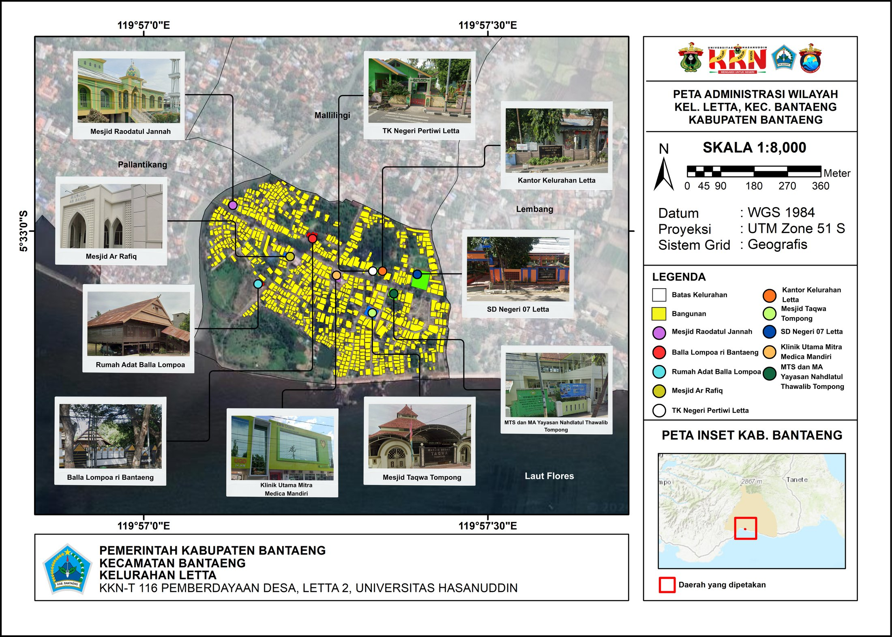

Website resmi kelurahan yang menyajikan informasi terkini, layanan publik, dan potensi lokal Letta secara digital.
Simak video profil singkat yang menampilkan gambaran wilayah, aktivitas warga, dan potensi Kelurahan Letta.
Kelurahan pesisir di jantung Kecamatan Bantaeng, berjarak sekitar 1 km dari pusat pemerintahan kecamatan maupun kabupaten.
Kelurahan Letta berada di kawasan pesisir dengan kondisi lahan datar, ketinggian 0–11 meter di atas permukaan laut. Wilayah ini dialiri Sungai Celendu di sisi barat, yang juga menjadi sumber air bersih PDAM setempat. Letta berbatasan dengan Kelurahan Malilingi di utara, Sungai Celendu di barat, Kelurahan Lembang di timur, dan Laut Flores di selatan.
Berdasarkan data Kelurahan Letta Dalam Angka 2026 (mengacu pada Data Agregat Semester II Tahun 2025 Disdukcapil), jumlah penduduk Kelurahan Letta tercatat 3.021 jiwa, terdiri dari 1.515 jiwa laki-laki dan 1.506 jiwa perempuan, dengan kepadatan penduduk sekitar 3.824 jiwa/km² dan rasio jenis kelamin 100,60. Penduduk didominasi oleh kelompok usia produktif (16–45 tahun), yang menjadi modal penting bagi pembangunan wilayah.
Dari sisi mata pencaharian, warga Letta yang bekerja banyak bergerak di sektor wiraswasta, pegawai negeri sipil, karyawan honorer, serta nelayan dan pembudidaya rumput laut — salah satu potensi ekonomi andalan kelurahan ini, didukung posisinya sebagai wilayah pesisir sekaligus kawasan perkotaan dengan aktivitas perdagangan dan jasa yang ramai.
Sumber data: BPS, Kecamatan Bantaeng Dalam Angka 2024. Catatan: sumber profil kelurahan yang lebih lama mencatat luas wilayah 31,56 Ha (0,3156 km²) — angka pada portal ini mengikuti data resmi BPS terbaru yang mencatat 0,79 km².
Panduan arah pembangunan Kelurahan Letta menuju masa depan yang lebih baik.
Meningkatkan pelayanan yang profesional
Meningkatkan pemberdayaan dan kesejahteraan masyarakat
Meningkatkan sumber daya aparatur pembangunan partisipatif
Meningkatkan potensi dan peluang usaha
Meningkatkan ketentraman dan keterlibatan masyarakat
Dari bagian wilayah Kerajaan Bantaeng hingga menjadi kelurahan tersendiri, Letta menyimpan jejak panjang perjalanan pemerintahan dan keagamaan di Bantaeng.
Kelurahan Letta berada di wilayah yang dahulu merupakan bagian dari Kerajaan Bantaeng, salah satu kerajaan tertua di Sulawesi (diperkirakan berusia lebih dari 760 tahun). Jejak era ini masih berdiri di Kampung Tompong, wilayah Letta: Masjid Besar Taqwa Tompong, dibangun pada 27 Rabiul Akhir 1302 H / 8 Februari 1885 M pada masa kekuasaan Kerajaan Bantaeng. Masjid ini kini berstatus cagar budaya (SK Bupati Bantaeng No. 410/406/VIII/2019) dan menjadi saksi perkembangan Islam di kawasan tersebut.
Pada tahun 1982, kampung Letta (saat itu masuk wilayah Kelurahan Mallilingi) sempat menjadi pusat pemerintahan Kecamatan Bantaeng, sebelum akhirnya dipindahkan ke kampung Pallauweng, Desa Ulugalung.
Selanjutnya Letta berkembang menjadi kelurahan tersendiri di Kecamatan Bantaeng, dengan luas 31,56 Ha, terbagi dalam 5 RW dan 12 RT, berlokasi di kawasan pesisir pantai dekat pusat kota.
Dapatkan berita terbaru dan informasi penting dari Kelurahan Letta.
Temukan posisi Kelurahan Letta di peta dengan mudah dan lengkap.
Gunakan Ctrl + Scroll untuk memperbesar/memperkecil peta.
Peta administrasi Kelurahan Letta beserta sebaran fasilitas umum, sarana ibadah, dan bangunan cagar budaya.

Skala 1:8.000 · Datum WGS 1984 · Proyeksi UTM Zone 51S. Sumber: KKN-T 116 Pemberdayaan Desa, Letta 2, Universitas Hasanuddin.